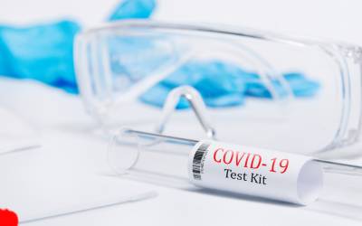
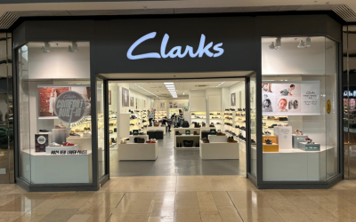

Projects

Cyclistic Bike-Share Dashboard
Analyzed user behavior using Tableau and provided insights to increase annual subscriptions.

COVID-19 SQL + Tableau
Cleaned and explored global COVID data with SQL, visualized key trends in Tableau.
LEGO Dataset EDA
Explored LEGO dataset to find top parts, colors, and themes using SQL & Tableau.

Clarks Shop Pricing
Investigated product price changes and sales trends using SQL analysis techniques.

Video Games Sales
Analyzed video game sales using SQL and visualized key trends in Tableau.